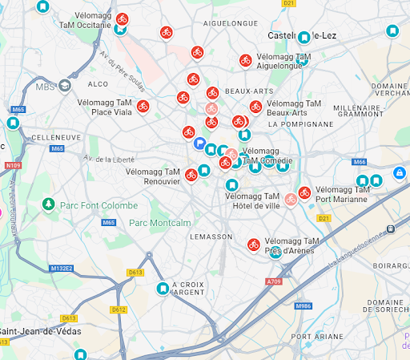
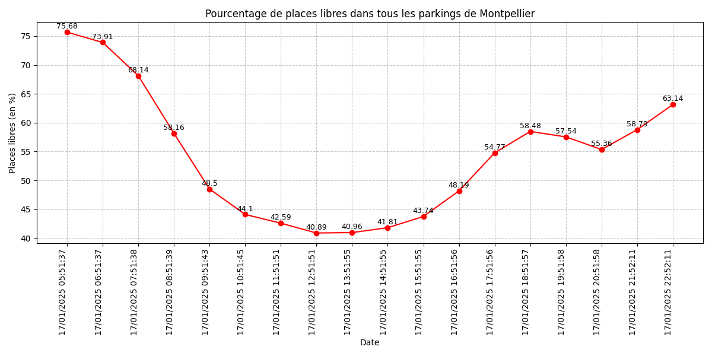
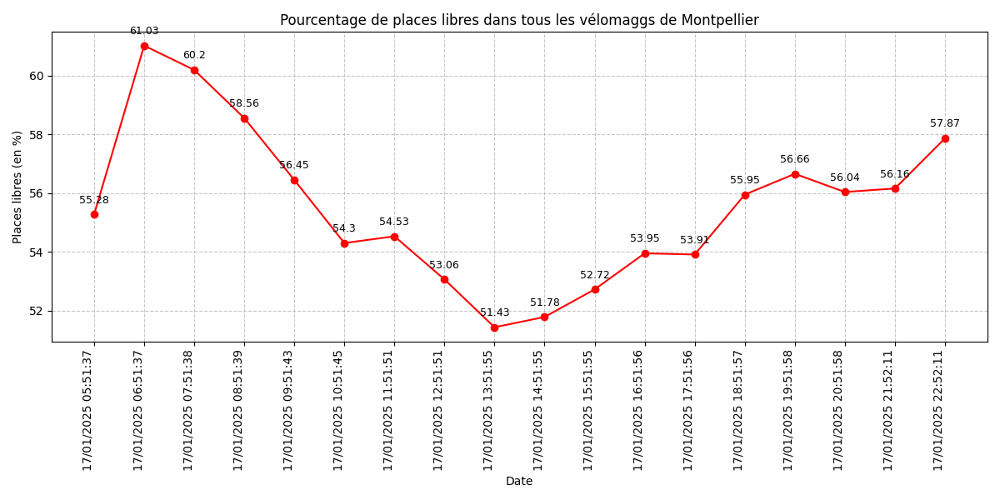
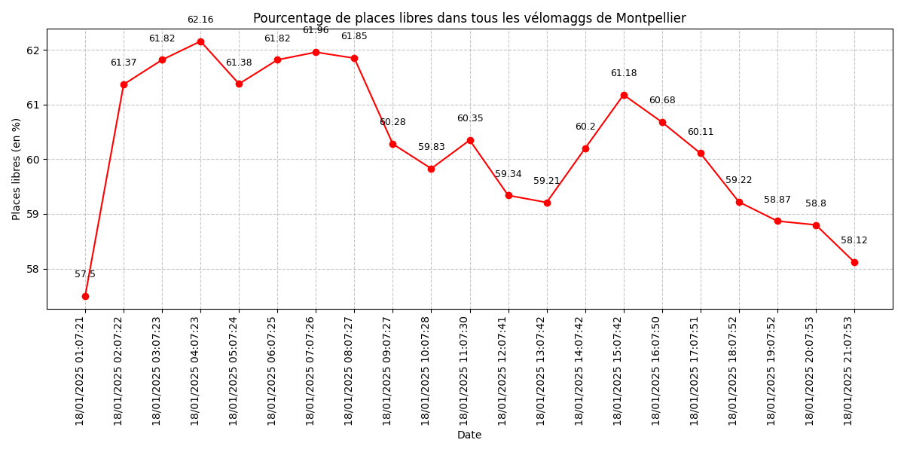
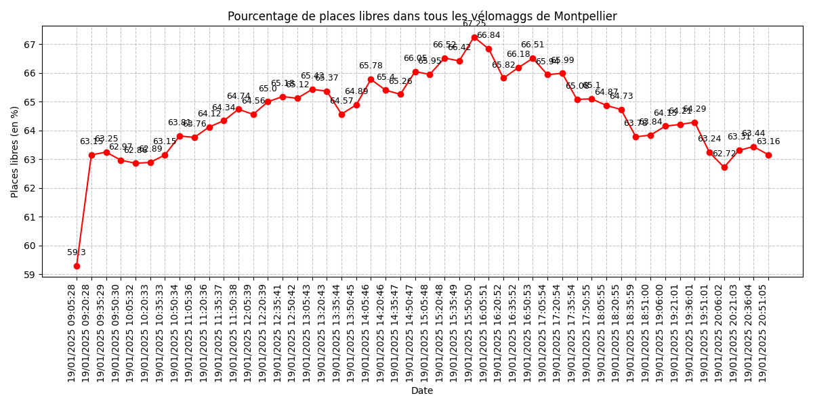
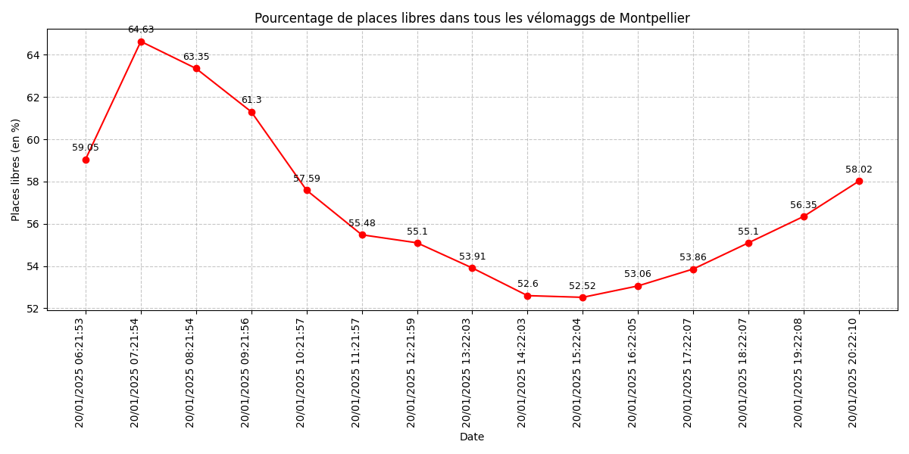
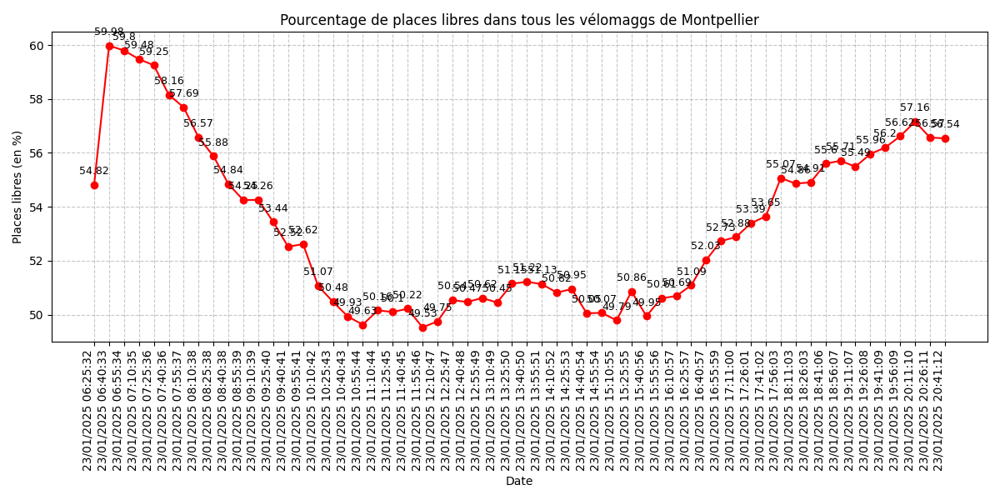

Résultats
Prérequis parkings et vélomaggs
Nous avons mené cette étude sur les 24 parkings voitures de votre charmante ville de Montpellier.
Nous avons collecté les données de ces parkings sur une période d'une semaine en direct,
et nous avons analysé les données historiques sur plus d'une année.
Ainsi que sur les 57 vélomaggs de la ville
Quel est le taux de remplissage moyen ?
En moyenne sur une journée
le taux moyen de remplissage des parkings voitures dans la ville est de 58,1%.
Pour les parkings vélo ce taux d'utilisation est de 56,7%.
Quand les parkings sont-ils saturés ?
Les parkings ne sont pas particulièrement saturés de manière globale , mais sont davantage remplis de 8h jusqu'a 18h en moyenne.
Même si certain jours comme le Samedi où ils sont remplis jusqu'a des heures un peu plus tardives.
Y a-t-il des jours particuliers d affluence dans la semaine, ou des mois plus chargés que d autres ?
Il y a particulièrement de monde dans les parkings le samedi et dimanche du côté du centre ville et des zones commerciales.
Mais de manière générale ce sont les autres jours de la semaine qui sont les plus chargés en terme d'occupation sur l'entièreté des parkings de la ville.
Ainsi que les mois de novembre , décembre qui sont particulièrement chargés par rapport au reste de l'année.
Tous les parkings obéissent-ils aux mêmes rêgles d'évolution ?
Non les parkings situés vers le centre ville et les zones commerciales sont beaucoup plus remplis
Y a t'il des parkings plus saturés que les autres ?
Oui nous voyons bien que certains parkings comme "Foch" "Mosson" "Vicarello" "Sabines" "Arc de Triomphe" "Corum"
arrivent beaucoup plus a saturation que les autres.
Y a t'il des parkings sous-utilisés ?
Oui nous voyons bien que certains parkings comme "Saint Jean Le Sec" "Circe" "Polygone"
sont beaucoup moins remplis que les autres et ont donc une taille surestimée par rapport à la demande
Y a t'il un rapport entre le taux d'occupation des parkings et l'utilisation des vélomaggs ?
Lorsque les parkings suivants sont assez remplis nous observons une diminution de la disponibilité des vélos dans les vélommags indiqués ci-dessous
pouvant être une corrélation, les personnes garent leur voitures et vont chercher un vélo pour se déplacer de manière plus saine pour la planète
Parking Foch :
Vélomagg Jules Ferry (25% de places libres) : à 1 minute à pied.
Vélomagg Saint-Roch (35% de places libres) : à 4 minutes à pied.
Vélomagg Albert 1er (20% de places libres) : à 5 minutes à pied.
Parking Comédie :
Vélomagg Jules Ferry (25% de places libres) : à 4 minutes à pied.
Vélomagg Saint-Roch (35% de places libres) : à 1 minute à pied.
Vélomagg Albert 1er (20% de places libres) : à 6 minutes à pied.
Parking Gambetta :
Vélomagg Jules Ferry (25% de places libres) : à 5 minutes à pied.
Vélomagg Albert 1er (20% de places libres) : à 1 minute à pied.
Vélomagg Saint-Roch (35% de places libres) : à 6 minutes à pied.
Y a t'il un rapport entre le taux d'occupation des parkings voitures et le tramway ?
Les parkings voitures suivants "Sabines" et "Euromédecine" sont assez remplis et ont une certaine
proximité avec les lignes de tramway de 5 à 10 minutes à pied ( Ligne 1 pour Euromédecine et Ligne 2 pour Sabines )
Carte des parkings et vélomaggs

Graphes
Pourcentages de places libres Vendredi 17/01 parkings voitures

Pourcentages de places libres Vendredi 17/07 vélomaggs

Pourcentages de places libres Samedi 18/01 vélomaggs

Pourcentages de places libres Dimanche 19/01 vélomaggs

Pourcentages de places libres Lundi 20/01 vélomaggs

Pourcentages de places libres Jeudi 23/01 vélomaggs
